Premium media deck
Big Previous, Play/Pause, Next and Mute buttons. Volume animates around the ring from 0 to 100% (estimated, not read from the PC). Skip tracks and watch the sparks fly.
OPEN SOURCE · ESP32-S3 · USB HID
Meet Rotary Buddy. A media dial when you need it, a playful little friend when you don't. Built for the 1.28-inch Elecrow CrowPanel rotary touchscreen.
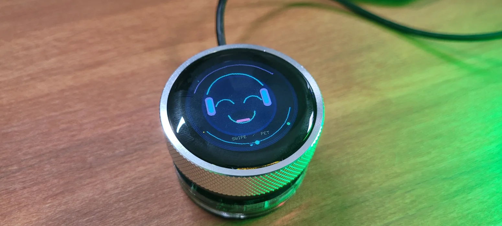
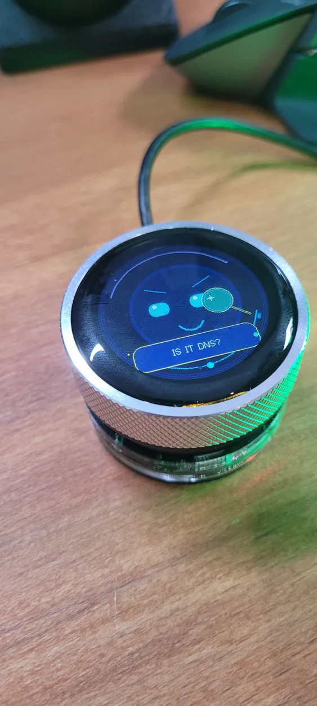
Photos of the working 1.28-inch ESP32-S3 device. No rendered product mockup.
TWO WORLDS
No sprawling menus or unnecessary shortcuts. Swipe sideways to change screens. Stroke down to pet Buddy. Turn the dial for volume and press to play or pause.
Big Previous, Play/Pause, Next and Mute buttons. Volume animates around the ring from 0 to 100% (estimated, not read from the PC). Skip tracks and watch the sparks fly.
113 animated moods and 135 witty captions. From warm greetings and petting reactions to hats, headphones, oversized props and sleepy dreams.
Media automatically becomes Buddy after 30 seconds without input. Buddy settles down and dreams after five minutes. Tap, twist or press to wake it up.
TWO SCREENS, ONE DIAL
Swipe left or right to switch screens. The firmware draws the interface on-device using C++ graphics. Below are illustrative screen previews, while the photos above show the actual hardware.
Buddy reacts to taps, petting and idle time.
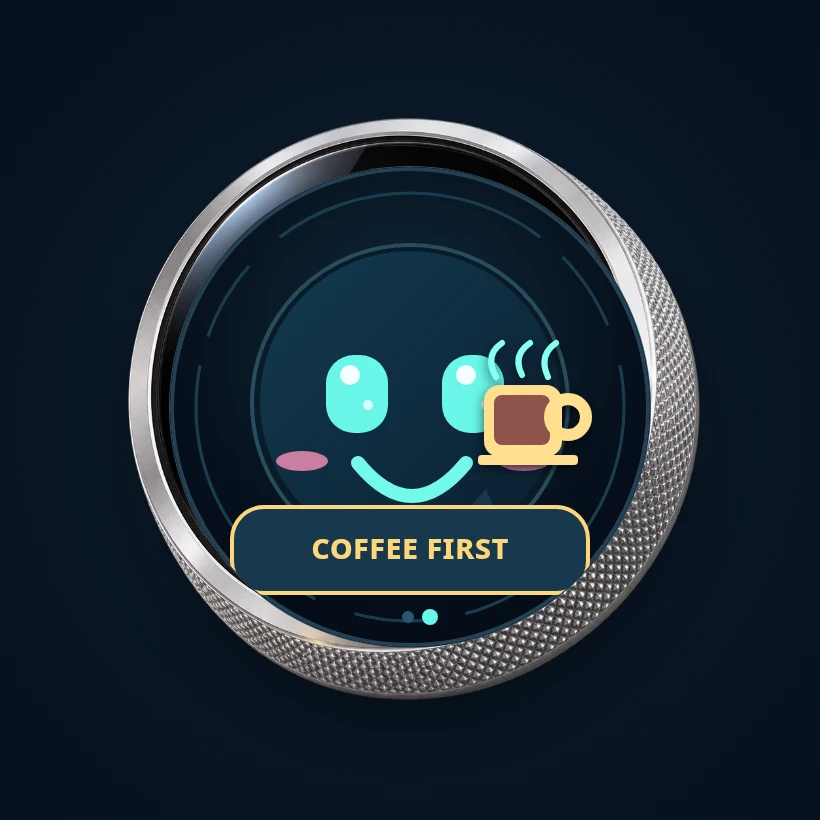
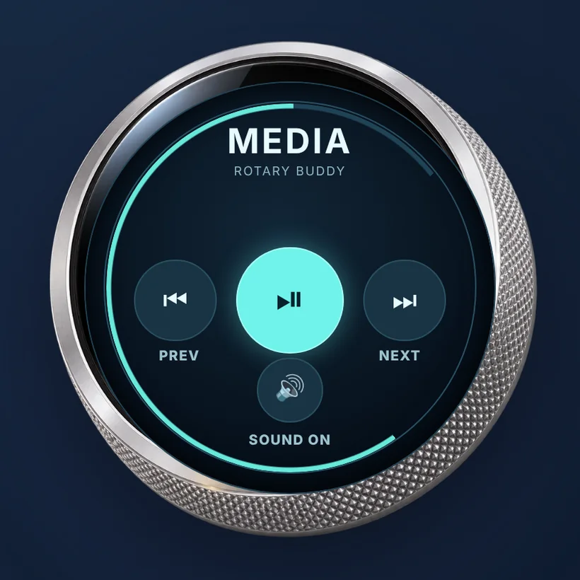
UI PREVIEW · ILLUSTRATIONMEET THE MOODS
Clear speech bubbles, expressive eyes and a little DevOps humour. These illustrations show Buddy's visual style; the real photos above show the hardware.
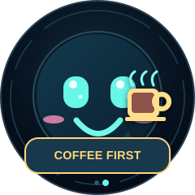
A much-needed break
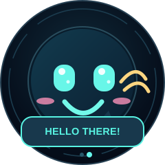
A curious hello
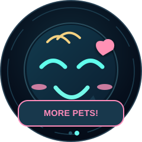
Stroke down to make Buddy happy
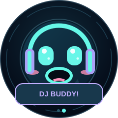
Sometimes Buddy brings the beat
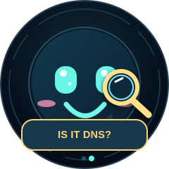
Investigating another mystery
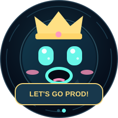
A little engineering humour
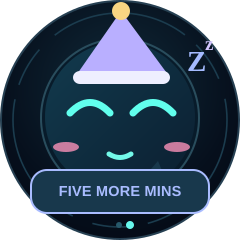
A sleepy desktop friend
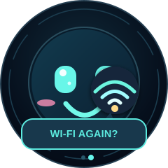
Wireless drama, purely visual
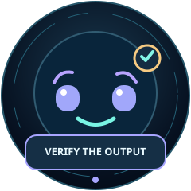
A little AI scepticism
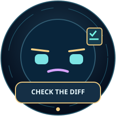
Before you click merge
WEB FLASHER
No Arduino IDE or desktop installer required. Connect the device and flash firmware directly from your browser. After each successful GitHub update, Cloudflare automatically builds and publishes the new firmware.
Use the included data-capable USB lead. Hold BOOT, tap RESET and release BOOT to enter ESP32-S3 download mode.
Choose the port and the firmware below. Web Serial requires HTTPS and a supported desktop browser.
Press RESET after flashing. Your PC sees a standard USB multimedia device, no pairing or background software.
EXISTING DEVICE
Flash only the application at 0x10000. It preserves the settings area ONLY if you do not choose "Erase device" in the ESP Web Tools dialog. Requires the same partition layout.
NEW DEVICE / RESET
Flashes a merged bootloader, partition table and application image. Select Erase device in the installer if you want a clean reset of previous settings.
Firmware images are compiled automatically by Cloudflare Pages from the latest GitHub commit and verified before deployment. If a build fails, the current working release stays online. Designed only for the Elecrow 1.28-inch ESP32-S3 rotary display, not for M5Stack hardware.
MORE FROM MY WORKBENCH
Real builds and browser tools, with previews taken from their source repositories when available. Visit each project or explore its code.

ESP32-S3 · BLUETOOTH HID
A wireless touchscreen deck for media controls, shortcuts and everyday PC actions. Built with M5Stack CoreS3 SE.

BROWSER TOOL · SCRATCH
Convert exported Scratch projects into standalone HTML files, directly in your browser or offline.

CREATIVE TOOL · LOCAL-FIRST
Turn images, video and camera input into customizable ASCII art without uploading your files.

DEVOPS · BROWSER UTILITIES
Quick browser tools for CIDR, cron, chmod, time zones, encoding and everyday admin work.
MADE TO TINKER
Adjust colors, moods, idle and sleep times, volume scaling and more in include/Config.h and the renderer. All graphics are original C++ primitives.